AEA2026
2026-10-13
ggplot2General format will be
Tip
These boxes will have links to more information
R is the language that the code is written in.
RStudio is the interface (GUI) many people use to write R code in.
The source is where you:
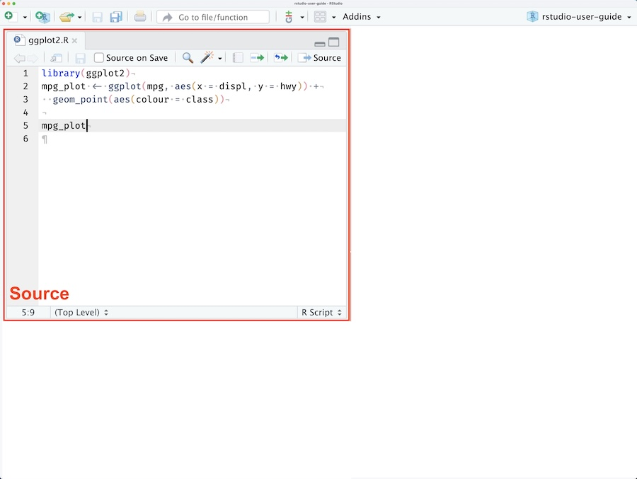
The environment refers to the current state of your R session
This can include:
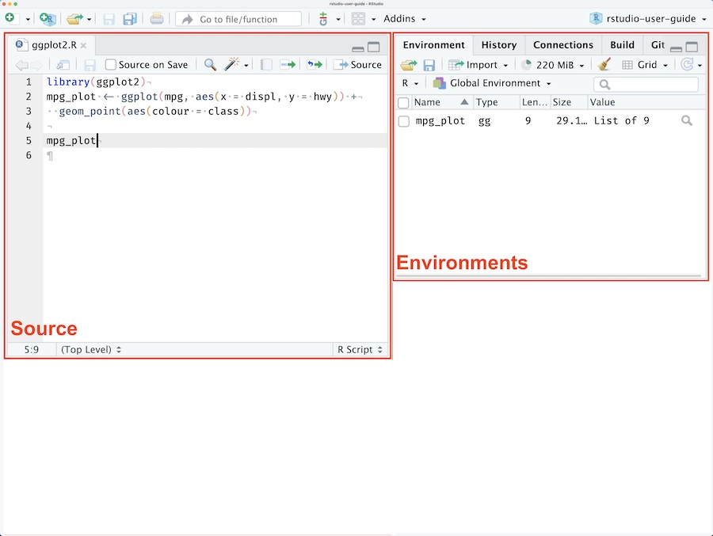
The console is where:
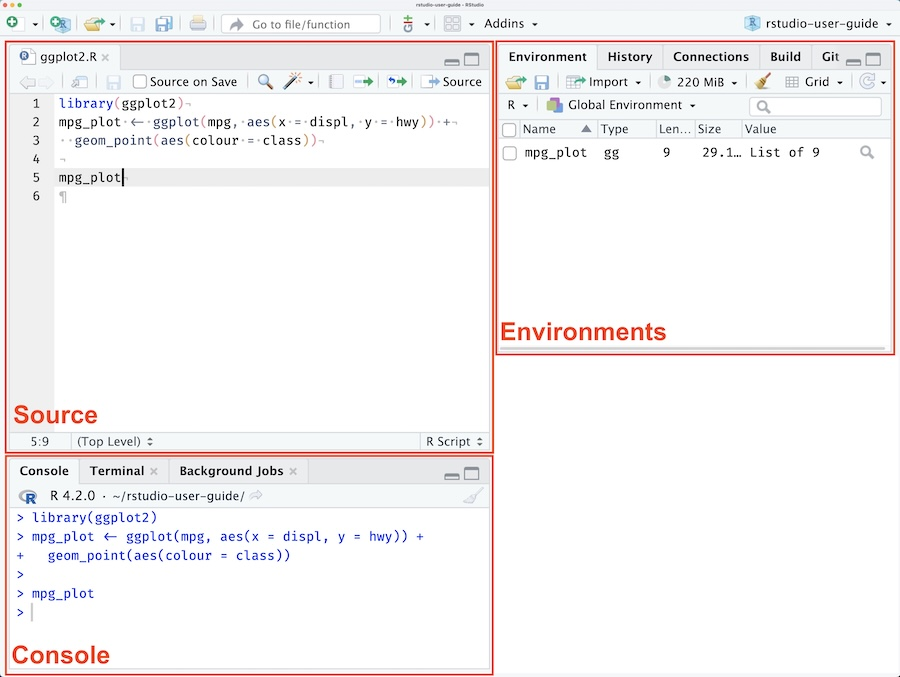
The output pane is where:
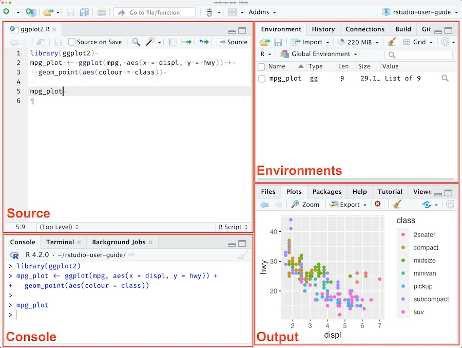
.RProj filesHandy files that:
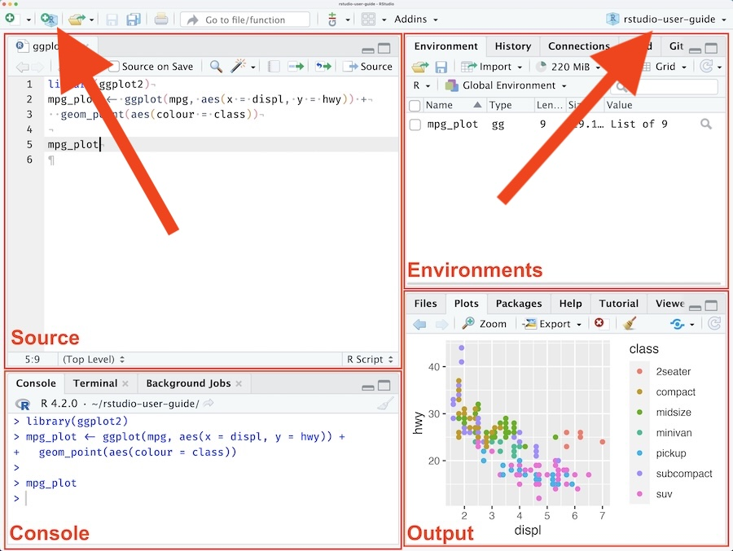
Reproducible workflows start with good file management:
/2026-08-27-data-quality
2026-08-27-data-quality.RProj
data_quality_report.docx
/code
cleaning.R
descriptives.R
modelling.R
visualisation.R /data
wave_1.csv
wave_2.csv
/documentation
data_analysis_plan.docx
data_dictionary.csv
/output
model_summary.csv
forest_plot.pngAbsolute file path for the cleaning.R script:
//Volumes/shared drive/research/mayi kuwayu/wave 2/projects/2026-08-27-data-quality/code/cleaning.R
Relative file is relative to the current working directory:
code/cleaning.R
/2026-08-27-data-quality
2026-08-27-data-quality.RProj
data_quality_report.docx
/code
cleaning.R
descriptives.R
modelling.R
visualisation.R /data
wave_1.csv
wave_2.csv
/documentation
data_analysis_plan.docx
data_dictionary.csv
/output
model_summary.csv
forest_plot.pngHave to provide directions to find the data:
.. means up one folder up
../ is the same as mayi kuwayu/projects/../../ means two folders up
../../ is the same as mayi kuwayu/wave 2../../data/w2_v1.csv/mayi kuwayu
/data
w2_v1.csv
/projects
/2026-08-27-data-quality
2026-08-27-data-quality.RProj
data_quality_report.docx
/code
cleaning.R
descriptives.R modelling.R
visualisation.R
/documentation
data_analysis_plan.docx
data_dictionary.csv
/output
model_summary.csv
forest_plot.pngA package is a collection of functions usually written around a particular goal or task.
Tip
For a list of available packages see https://cran.r-project.org/web/packages/available_packages_by_name.html
tidyverseA set of user-friendly tools for data manipulation and analysis
readr)dplyr, tidyr)ggplot2)stringr)lubridate)forcats)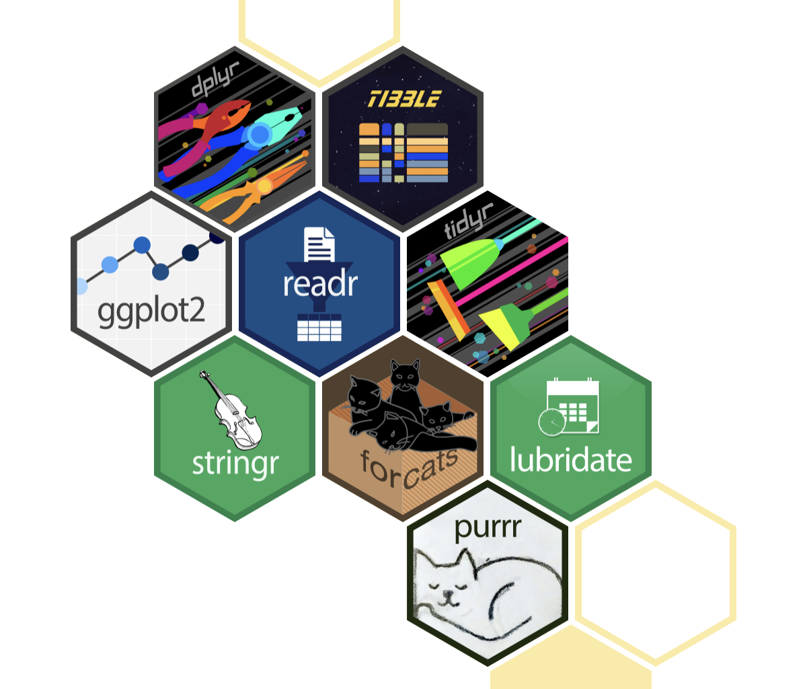
Tip
See https://tidyverse.org/packages/ for details on what’s included in the tidyverse
When you load packages that have the same function name, only one will take precedence
Prevent hours of debugging by being declarative!
There are different terms for different elements of code
In the above code:
data is an objectselect is a functionspecies and island are arguments of the select function<-)R prints results in the console by default
# A tibble: 74 × 12
make price mpg rep78 headroom trunk weight length turn displacement
<chr> <dbl> <dbl> <dbl> <dbl> <dbl> <dbl> <dbl> <dbl> <dbl>
1 AMC Concord 4099 22 3 2.5 11 2930 186 40 121
2 AMC Pacer 4749 17 3 3 11 3350 173 40 258
3 AMC Spirit 3799 22 NA 3 12 2640 168 35 121
4 Buick Cent… 4816 20 3 4.5 16 3250 196 40 196
5 Buick Elec… 7827 15 4 4 20 4080 222 43 350
6 Buick LeSa… 5788 18 3 4 21 3670 218 43 231
7 Buick Opel 4453 26 NA 3 10 2230 170 34 304
8 Buick Regal 5189 20 3 2 16 3280 200 42 196
9 Buick Rivi… 10372 16 3 3.5 17 3880 207 43 231
10 Buick Skyl… 4082 19 3 3.5 13 3400 200 42 231
# ℹ 64 more rows
# ℹ 2 more variables: gear_ratio <dbl>, foreign <dbl+lbl>|>)Chain sequences of functions together using pipes
Common data types:
Displayed using single ('') or double quotes ("")
If we start off with a character vector animals
We can convert it to a factor using factor()
ISO 8601 format YYYY-MM-DD is the most straightforward
Other formats need to be specified
Be wary of timezones — the default is your system settings
Missing has its own special identity in R — NA
It also has its own special function to check if something is missing:
Combining things together
Tip
Formatters like air do a lot of the work for you https://tidyverse.org/blog/2025/02/air/
They try to tell you what the problem was, but it’s not always easy
Try to figure out the solution yourself before consulting an LLM, you’ll learn more!
Tip
You’ll get lots of error messages as you learn how to code, this is normal
Documentation explaining how a function works:
Run ?filter from the console, or search the ‘Help’ pane
What might these error messages mean?
Which package to use?
readr for reading .csv filesgooglesheets4 for reading directly from Google Sheetsreadxl for Excel files (.xls and .xlsx)haven for Stata, SPSS, and SAS filesTip
readr has a cheatsheet
If the data are clean, it’s not complicated
Data aren’t always machine-readable, especially from the ABS
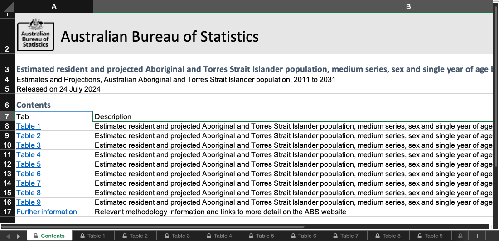
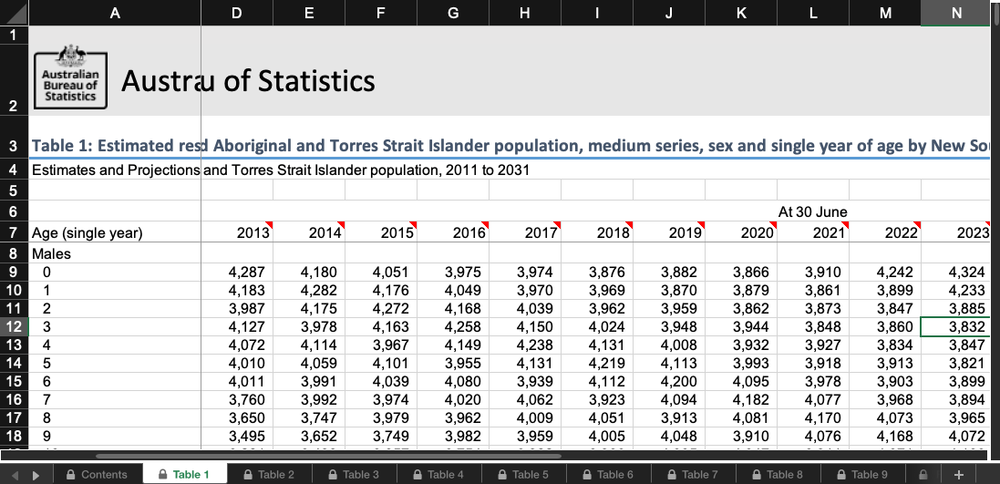
read_excel(
path,
sheet = NULL,
range = NULL,
col_names = TRUE,
col_types = NULL,
na = "",
trim_ws = TRUE,
skip = 0,
n_max = Inf,
guess_max = min(1000, n_max),
progress = readxl_progress(),
.name_repair = "unique"
)Look at your data!
View() or click on the objectdata)head() to see a snapshotdplyr::glimpse()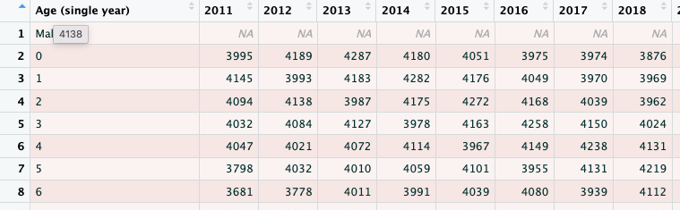
# A tibble: 136 × 22
`Age (single year)` `2011` `2012` `2013` `2014` `2015` `2016` `2017` `2018`
<chr> <dbl> <dbl> <dbl> <dbl> <dbl> <dbl> <dbl> <dbl>
1 Males NA NA NA NA NA NA NA NA
2 0 3995 4189 4287 4180 4051 3975 3974 3876
3 1 4145 3993 4183 4282 4176 4049 3970 3969
4 2 4094 4138 3987 4175 4272 4168 4039 3962
5 3 4032 4084 4127 3978 4163 4258 4150 4024
6 4 4047 4021 4072 4114 3967 4149 4238 4131
7 5 3798 4032 4010 4059 4101 3955 4131 4219
8 6 3681 3778 4011 3991 4039 4080 3939 4112
9 7 3506 3662 3760 3992 3974 4020 4062 3923
10 8 3275 3493 3650 3747 3979 3962 4009 4051
# ℹ 126 more rows
# ℹ 13 more variables: `2019` <dbl>, `2020` <dbl>, `2021` <dbl>, `2022` <dbl>,
# `2023` <dbl>, `2024` <dbl>, `2025` <dbl>, `2026` <dbl>, `2027` <dbl>,
# `2028` <dbl>, `2029` <dbl>, `2030` <dbl>, `2031` <dbl># A tibble: 6 × 22
`Age (single year)` `2011` `2012` `2013` `2014` `2015` `2016` `2017` `2018`
<chr> <dbl> <dbl> <dbl> <dbl> <dbl> <dbl> <dbl> <dbl>
1 Males NA NA NA NA NA NA NA NA
2 0 3995 4189 4287 4180 4051 3975 3974 3876
3 1 4145 3993 4183 4282 4176 4049 3970 3969
4 2 4094 4138 3987 4175 4272 4168 4039 3962
5 3 4032 4084 4127 3978 4163 4258 4150 4024
6 4 4047 4021 4072 4114 3967 4149 4238 4131
# ℹ 13 more variables: `2019` <dbl>, `2020` <dbl>, `2021` <dbl>, `2022` <dbl>,
# `2023` <dbl>, `2024` <dbl>, `2025` <dbl>, `2026` <dbl>, `2027` <dbl>,
# `2028` <dbl>, `2029` <dbl>, `2030` <dbl>, `2031` <dbl>Rows: 136
Columns: 22
$ `Age (single year)` <chr> "Males", "0", "1", "2", "3", "4", "5", "6", "7", "…
$ `2011` <dbl> NA, 3995, 4145, 4094, 4032, 4047, 3798, 3681, 3506…
$ `2012` <dbl> NA, 4189, 3993, 4138, 4084, 4021, 4032, 3778, 3662…
$ `2013` <dbl> NA, 4287, 4183, 3987, 4127, 4072, 4010, 4011, 3760…
$ `2014` <dbl> NA, 4180, 4282, 4175, 3978, 4114, 4059, 3991, 3992…
$ `2015` <dbl> NA, 4051, 4176, 4272, 4163, 3967, 4101, 4039, 3974…
$ `2016` <dbl> NA, 3975, 4049, 4168, 4258, 4149, 3955, 4080, 4020…
$ `2017` <dbl> NA, 3974, 3970, 4039, 4150, 4238, 4131, 3939, 4062…
$ `2018` <dbl> NA, 3876, 3969, 3962, 4024, 4131, 4219, 4112, 3923…
$ `2019` <dbl> NA, 3882, 3870, 3959, 3948, 4008, 4113, 4200, 4094…
$ `2020` <dbl> NA, 3866, 3879, 3862, 3944, 3932, 3993, 4095, 4182…
$ `2021` <dbl> NA, 3910, 3861, 3873, 3848, 3927, 3918, 3978, 4077…
$ `2022` <dbl> NA, 4242, 3899, 3847, 3860, 3834, 3913, 3903, 3968…
$ `2023` <dbl> NA, 4324, 4233, 3885, 3832, 3847, 3821, 3899, 3894…
$ `2024` <dbl> NA, 4394, 4315, 4219, 3870, 3818, 3833, 3808, 3890…
$ `2025` <dbl> NA, 4467, 4385, 4301, 4204, 3856, 3803, 3820, 3801…
$ `2026` <dbl> NA, 4540, 4458, 4372, 4286, 4189, 3841, 3789, 3813…
$ `2027` <dbl> NA, 4613, 4531, 4444, 4357, 4271, 4176, 3826, 3780…
$ `2028` <dbl> NA, 4691, 4605, 4517, 4428, 4343, 4257, 4162, 3818…
$ `2029` <dbl> NA, 4756, 4682, 4590, 4501, 4413, 4329, 4242, 4153…
$ `2030` <dbl> NA, 4821, 4747, 4667, 4574, 4486, 4398, 4314, 4233…
$ `2031` <dbl> NA, 4876, 4812, 4732, 4650, 4559, 4471, 4382, 4305…janitor::clean_names() is a starting point
dplyr::rename() and dplyr::rename_with() let you specify names
Keep or remove columns using select()
contains matches against a patternstarts_with only looks at the startwhere keeps columns that meet a criteriatidyselect package# A tibble: 136 × 11
age x2020 x2021 x2022 x2023 x2024 x2025 x2026 x2027 x2028 x2029
<chr> <dbl> <dbl> <dbl> <dbl> <dbl> <dbl> <dbl> <dbl> <dbl> <dbl>
1 Males NA NA NA NA NA NA NA NA NA NA
2 0 3866 3910 4242 4324 4394 4467 4540 4613 4691 4756
3 1 3879 3861 3899 4233 4315 4385 4458 4531 4605 4682
4 2 3862 3873 3847 3885 4219 4301 4372 4444 4517 4590
5 3 3944 3848 3860 3832 3870 4204 4286 4357 4428 4501
6 4 3932 3927 3834 3847 3818 3856 4189 4271 4343 4413
7 5 3993 3918 3913 3821 3833 3803 3841 4176 4257 4329
8 6 4095 3978 3903 3899 3808 3820 3789 3826 4162 4242
9 7 4182 4077 3968 3894 3890 3801 3813 3780 3818 4153
10 8 4081 4170 4073 3965 3893 3888 3799 3811 3778 3815
# ℹ 126 more rowsage variable and counts for the 2020sKeep or remove rows using dplyr::filter()
# A tibble: 48 × 11
age x2020 x2021 x2022 x2023 x2024 x2025 x2026 x2027 x2028 x2029
<chr> <dbl> <dbl> <dbl> <dbl> <dbl> <dbl> <dbl> <dbl> <dbl> <dbl>
1 Males NA NA NA NA NA NA NA NA NA NA
2 18 3355 3259 3449 3606 3694 3921 3911 3944 3978 3856
3 19 3245 3336 3237 3423 3580 3669 3894 3887 3919 3952
4 20 3147 3222 3309 3213 3395 3552 3643 3867 3861 3893
5 21 3061 3123 3196 3281 3187 3366 3524 3614 3837 3834
6 22 3000 3037 3105 3178 3261 3171 3347 3505 3596 3817
7 23 2926 2984 3017 3084 3156 3237 3152 3325 3482 3573
8 24 2819 2905 2965 2996 3063 3134 3214 3132 3302 3458
9 25 2877 2800 2877 2938 2970 3035 3106 3185 3105 3273
10 26 2590 2850 2773 2848 2911 2943 3008 3079 3156 3079
# ℹ 38 more rowsMales or FemalesUpdate an existing column or make a new one using mutate()
case_when is from the dplyr package~.default is NA if you don’t specify anythingsex is extracted from the age variableage is numeric nowage_group is based on age rangesdplyr::fill() fills in missing data using the last non-missing values
# A tibble: 48 × 13
age x2020 x2021 x2022 x2023 x2024 x2025 x2026 x2027 x2028 x2029 sex
<dbl> <dbl> <dbl> <dbl> <dbl> <dbl> <dbl> <dbl> <dbl> <dbl> <dbl> <chr>
1 NA NA NA NA NA NA NA NA NA NA NA Males
2 18 3355 3259 3449 3606 3694 3921 3911 3944 3978 3856 Males
3 19 3245 3336 3237 3423 3580 3669 3894 3887 3919 3952 Males
4 20 3147 3222 3309 3213 3395 3552 3643 3867 3861 3893 Males
5 21 3061 3123 3196 3281 3187 3366 3524 3614 3837 3834 Males
6 22 3000 3037 3105 3178 3261 3171 3347 3505 3596 3817 Males
7 23 2926 2984 3017 3084 3156 3237 3152 3325 3482 3573 Males
8 24 2819 2905 2965 2996 3063 3134 3214 3132 3302 3458 Males
9 25 2877 2800 2877 2938 2970 3035 3106 3185 3105 3273 Males
10 26 2590 2850 2773 2848 2911 2943 3008 3079 3156 3079 Males
# ℹ 38 more rows
# ℹ 1 more variable: age_group <chr>dplyr::fill() fills in missing data using the last non-missing values
# A tibble: 460 × 5
age sex age_group year count
<dbl> <chr> <chr> <chr> <dbl>
1 18 Males 18 to 24 x2020 3355
2 18 Males 18 to 24 x2021 3259
3 18 Males 18 to 24 x2022 3449
4 18 Males 18 to 24 x2023 3606
5 18 Males 18 to 24 x2024 3694
6 18 Males 18 to 24 x2025 3921
7 18 Males 18 to 24 x2026 3911
8 18 Males 18 to 24 x2027 3944
9 18 Males 18 to 24 x2028 3978
10 18 Males 18 to 24 x2029 3856
# ℹ 450 more rows# Function arguments
pivot_longer(
data,
cols,
...,
cols_vary = "fastest",
names_to = "name",
names_prefix = NULL,
names_sep = NULL,
names_pattern = NULL,
names_ptypes = NULL,
names_transform = NULL,
names_repair = "check_unique",
values_to = "value",
values_drop_na = FALSE,
values_ptypes = NULL,
values_transform = NULL
)# A tibble: 230 × 5
age age_group year Males Females
<dbl> <chr> <chr> <dbl> <dbl>
1 18 18 to 24 x2020 3355 3089
2 18 18 to 24 x2021 3259 3110
3 18 18 to 24 x2022 3449 3182
4 18 18 to 24 x2023 3606 3326
5 18 18 to 24 x2024 3694 3551
6 18 18 to 24 x2025 3921 3798
7 18 18 to 24 x2026 3911 3747
8 18 18 to 24 x2027 3944 3770
9 18 18 to 24 x2028 3978 3778
10 18 18 to 24 x2029 3856 3709
# ℹ 220 more rows# Function arguments
pivot_wider(
data,
...,
id_cols = NULL,
id_expand = FALSE,
names_from = name,
names_prefix = "",
names_sep = "_",
names_glue = NULL,
names_sort = FALSE,
names_vary = "fastest",
names_expand = FALSE,
names_repair = "check_unique",
values_from = value,
values_fill = NULL,
values_fn = NULL,
unused_fn = NULL
)Part of base R
age age_group year Males Females
Min. :18 Length :230 Length :230 Min. :1501 Min. :1661
1st Qu.:23 N.unique : 2 N.unique : 10 1st Qu.:2278 1st Qu.:2254
Median :29 N.blank : 0 N.blank : 0 Median :2792 Median :2656
Mean :29 Min.nchar: 8 Min.nchar: 5 Mean :2723 Mean :2652
3rd Qu.:35 Max.nchar: 8 Max.nchar: 5 3rd Qu.:3139 3rd Qu.:3016
Max. :40 Max. :3978 Max. :3798 From the janitor package
Use group_by() or the .by = argument
.by applies the grouping just for that operation, so grouping doesn’t persistfilter() and filter_out()mutate()summarise()slice() functionsplot() — base R
ggplot2 — part of the tidyverse, highly customisable
tidyplots — simpler interface to ggplot2
ggplot2penguinsA quick look at the penguins dataset
species island bill_len bill_dep
Adelie :152 Biscoe :168 Min. :32.10 Min. :13.10
Chinstrap: 68 Dream :124 1st Qu.:39.23 1st Qu.:15.60
Gentoo :124 Torgersen: 52 Median :44.45 Median :17.30
Mean :43.92 Mean :17.15
3rd Qu.:48.50 3rd Qu.:18.70
Max. :59.60 Max. :21.50
NAs :2 NAs :2
flipper_len body_mass sex year
Min. :172.0 Min. :2700 female:165 Min. :2007
1st Qu.:190.0 1st Qu.:3550 male :168 1st Qu.:2007
Median :197.0 Median :4050 NAs : 11 Median :2008
Mean :200.9 Mean :4202 Mean :2008
3rd Qu.:213.0 3rd Qu.:4750 3rd Qu.:2009
Max. :231.0 Max. :6300 Max. :2009
NAs :2 NAs :2 species island bill_len bill_dep flipper_len body_mass sex year
1 Adelie Torgersen 39.1 18.7 181 3750 male 2007
2 Adelie Torgersen 39.5 17.4 186 3800 female 2007
3 Adelie Torgersen 40.3 18.0 195 3250 female 2007
4 Adelie Torgersen NA NA NA NA <NA> 2007
5 Adelie Torgersen 36.7 19.3 193 3450 female 2007
6 Adelie Torgersen 39.3 20.6 190 3650 male 2007To regress body_mass on sex and species, we write:
The outcome (body_mass) is on the left of the tilde ~
The covariates are on the right and are separated with a plus +
Call:
lm(formula = body_mass ~ sex + species, data = penguins)
Residuals:
Min 1Q Median 3Q Max
-816.87 -217.80 -16.87 227.61 882.20
Coefficients:
Estimate Std. Error t value Pr(>|t|)
(Intercept) 3372.39 31.43 107.308 <2e-16 ***
sexmale 667.56 34.70 19.236 <2e-16 ***
speciesChinstrap 26.92 46.48 0.579 0.563
speciesGentoo 1377.86 39.10 35.236 <2e-16 ***
---
Signif. codes: 0 '***' 0.001 '**' 0.01 '*' 0.05 '.' 0.1 ' ' 1
Residual standard error: 316.6 on 329 degrees of freedom
(11 observations deleted due to missingness)
Multiple R-squared: 0.8468, Adjusted R-squared: 0.8454
F-statistic: 606.1 on 3 and 329 DF, p-value: < 2.2e-16 [1] "coefficients" "residuals" "effects" "rank"
[5] "fitted.values" "assign" "qr" "df.residual"
[9] "na.action" "contrasts" "xlevels" "call"
[13] "terms" "model"
1 2 3 5 6 7
-289.9419594 427.6131923 -122.3868077 77.6131923 -389.9419594 252.6131923
8 13 14 15 16 17
635.0580406 -172.3868077 -239.9419594 360.0580406 327.6131923 77.6131923
18 19 20 21 22 23
460.0580406 -47.3868077 160.0580406 27.6131923 -439.9419594 427.6131923
24 25 26 27 28 29
-89.9419594 -239.9419594 427.6131923 -489.9419594 -172.3868077 -222.3868077
30 31 32 33 34 35
-89.9419594 -122.3868077 -139.9419594 -72.3868077 -139.9419594 -47.3868077
36 37 38 39 40 41
110.0580406 -89.9419594 177.6131923 -72.3868077 610.0580406 -222.3868077
42 43 44 45 46 47
-139.9419594 -272.3868077 360.0580406 -372.3868077 560.0580406 -614.9419594
49 50 51 52 53 54
77.6131923 110.0580406 127.6131923 260.0580406 77.6131923 10.0580406
55 56 57 58 59 60
-472.3868077 -339.9419594 177.6131923 -239.9419594 -522.3868077 -289.9419594
61 62 63 64 65 66
-222.3868077 360.0580406 227.6131923 10.0580406 -522.3868077 -89.9419594
67 68 69 70 71 72
-22.3868077 60.0580406 -322.3868077 410.0580406 227.6131923 -139.9419594
73 74 75 76 77 78
177.6131923 110.0580406 327.6131923 210.0580406 327.6131923 -139.9419594
79 80 81 82 83 84
177.6131923 -39.9419594 -172.3868077 660.0580406 427.6131923 160.0580406
85 86 87 88 89 90
-22.3868077 -489.9419594 -239.9419594 127.6131923 -89.9419594 227.6131923
91 92 93 94 95 96
177.6131923 260.0580406 27.6131923 410.0580406 -72.3868077 260.0580406
97 98 99 100 101 102
327.6131923 310.0580406 -472.3868077 60.0580406 352.6131923 685.0580406
103 104 105 106 107 108
-297.3868077 210.0580406 -447.3868077 -489.9419594 377.6131923 -139.9419594
109 110 111 112 113 114
-197.3868077 735.0580406 452.6131923 560.0580406 -172.3868077 235.0580406
115 116 117 118 119 120
527.6131923 35.0580406 -472.3868077 -264.9419594 -22.3868077 -714.9419594
121 122 123 124 125 126
-222.3868077 -539.9419594 77.6131923 -164.9419594 -322.3868077 -39.9419594
127 128 129 130 131 132
-97.3868077 260.0580406 -322.3868077 -39.9419594 -47.3868077 -539.9419594
133 134 135 136 137 138
127.6131923 435.0580406 52.6131923 -139.9419594 -197.3868077 -64.9419594
139 140 141 142 143 144
27.6131923 210.0580406 27.6131923 -564.9419594 -322.3868077 -314.9419594
145 146 147 148 149 150
-372.3868077 -389.9419594 210.0580406 102.6131923 77.6131923 -289.9419594
151 152 153 154 155 156
327.6131923 -39.9419594 -250.2448382 282.2000101 -300.2448382 282.2000101
157 158 159 160 161 162
-17.7999899 -200.2448382 49.7551618 -217.7999899 -350.2448382 -267.7999899
163 164 165 166 167 168
-100.2448382 132.2000101 -100.2448382 432.2000101 -550.2448382 432.2000101
169 170 171 172 173 174
-600.2448382 882.2000101 49.7551618 -67.7999899 282.2000101 249.7551618
175 176 177 178 180 181
-350.2448382 -367.7999899 249.7551618 -317.7999899 232.2000101 -150.2448382
182 183 184 185 186 187
132.2000101 -167.7999899 -50.2448382 299.7551618 632.2000101 399.7551618
188 189 190 191 192 193
-17.7999899 199.7551618 -167.7999899 -400.2448382 -67.7999899 -800.2448382
194 195 196 197 198 199
282.2000101 -450.2448382 -667.7999899 132.2000101 149.7551618 -550.2448382
200 201 202 203 204 205
-17.7999899 349.7551618 -117.7999899 99.7551618 -117.7999899 -350.2448382
206 207 208 209 210 211
-417.7999899 149.7551618 -367.7999899 -450.2448382 -417.7999899 -300.2448382
212 213 214 215 216 217
132.2000101 -550.2448382 -117.7999899 -350.2448382 232.2000101 -50.2448382
218 220 221 222 223 224
282.2000101 382.2000101 -50.2448382 132.2000101 -0.2448382 -417.7999899
225 226 227 228 229 230
-317.7999899 449.7551618 -50.2448382 382.2000101 -150.2448382 582.2000101
231 232 233 234 235 236
-0.2448382 532.2000101 -125.2448382 32.2000101 -25.2448382 -67.7999899
237 238 239 240 241 242
-0.2448382 182.2000101 -150.2448382 -117.7999899 124.7551618 132.2000101
243 244 245 246 247 248
199.7551618 -17.7999899 -0.2448382 232.2000101 99.7551618 -217.7999899
249 250 251 252 253 254
-492.7999899 124.7551618 -125.2448382 -167.7999899 99.7551618 182.2000101
255 256 258 259 260 261
224.7551618 82.2000101 82.2000101 -50.2448382 82.2000101 -175.2448382
262 263 264 265 266 267
82.2000101 249.7551618 532.2000101 -100.2448382 82.2000101 -375.2448382
268 270 271 273 274 275
432.2000101 582.2000101 174.7551618 99.7551618 332.2000101 449.7551618
276 277 278 279 280 281
-17.7999899 100.6893406 -166.8658111 -416.8658111 125.6893406 -341.8658111
282 283 284 285 286 287
550.6893406 -149.3106594 -316.8658111 750.6893406 -366.8658111 400.6893406
288 289 290 291 292 293
-291.8658111 300.6893406 -16.8658111 175.6893406 -16.8658111 -766.8658111
294 295 296 297 298 299
300.6893406 50.6893406 333.1341889 200.6893406 -666.8658111 -499.3106594
300 301 302 303 304 305
-266.8658111 -99.3106594 83.1341889 0.6893406 -266.8658111 300.6893406
306 307 308 309 310 311
483.1341889 -199.3106594 233.1341889 -49.3106594 33.1341889 -466.8658111
312 313 314 315 316 317
500.6893406 450.6893406 733.1341889 -699.3106594 433.1341889 -116.8658111
318 319 320 321 322 323
250.6893406 -516.8658111 100.6893406 275.6893406 383.1341889 0.6893406
324 325 326 327 328 329
233.1341889 -816.8658111 275.6893406 -74.3106594 -116.8658111 200.6893406
330 331 332 333 334 335
-16.8658111 -49.3106594 -616.8658111 -149.3106594 -16.8658111 -266.8658111
336 337 338 339 340 341
125.6893406 -116.8658111 250.6893406 250.6893406 -66.8658111 0.6893406
342 343 344
-291.8658111 33.1341889 375.6893406 body_mass ~ sex + species
attr(,"variables")
list(body_mass, sex, species)
attr(,"factors")
sex species
body_mass 0 0
sex 1 0
species 0 1
attr(,"term.labels")
[1] "sex" "species"
attr(,"order")
[1] 1 1
attr(,"intercept")
[1] 1
attr(,"response")
[1] 1
attr(,".Environment")
<environment: R_GlobalEnv>
attr(,"predvars")
list(body_mass, sex, species)
attr(,"dataClasses")
body_mass sex species
"numeric" "factor" "factor" 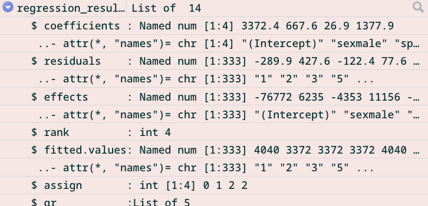
Base R
lm()glm()
Packages for common models:
lme4brmshttps://r4ds.hadley.nz/ https://adv-r.hadley.nz/index.html https://epirhandbook.com/en/
Slides available from https://benharrap.github.io/workshops/2026-10-13-AEA2026/slides.html
Comments
Use comments explain context, intention, functionality etc.
Use bookmarks to navigate sections of code
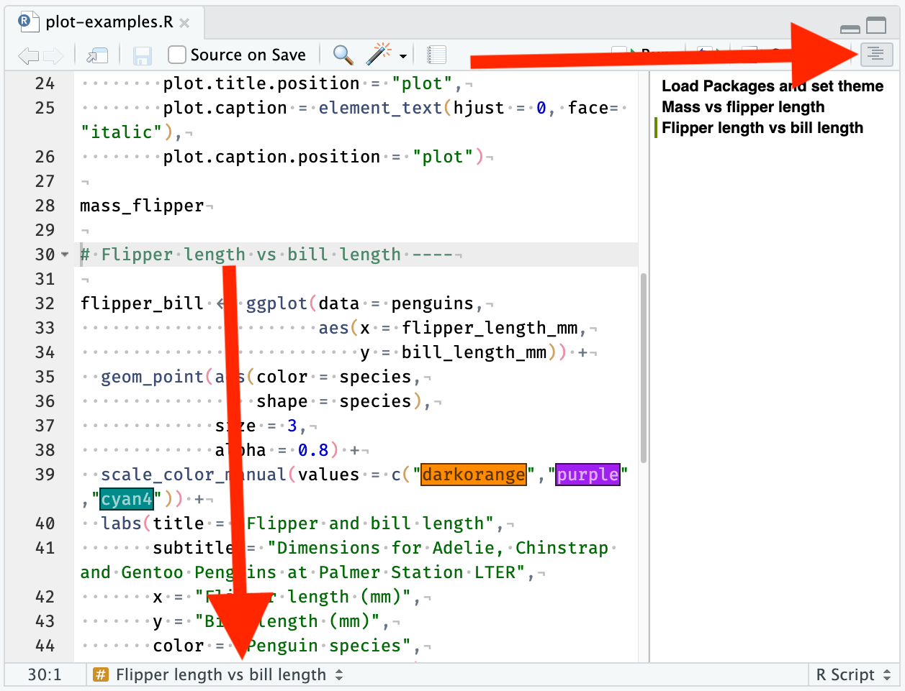